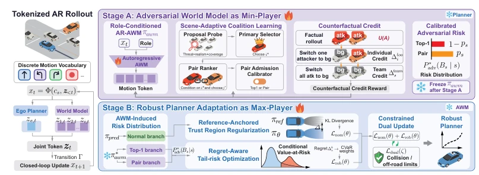
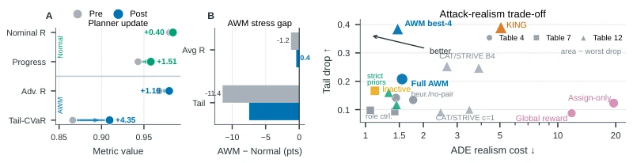
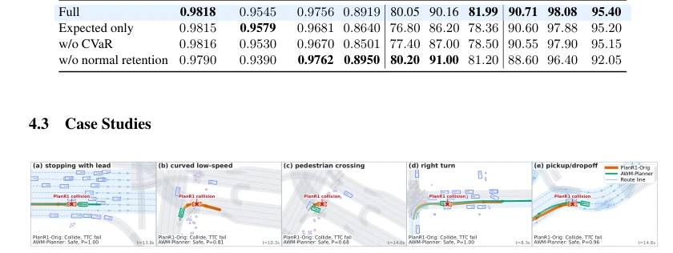
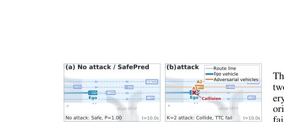
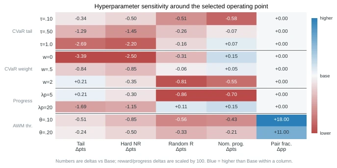

This paper stages an "internal battle royale" for autonomous driving planners, forcibly training the originally gentle and compliant World Model into a "villain", which is logically quite compelling. It attempts to solve the stubborn problem of planners "crashing due to lack of experience" in long-tail scenarios, no longer relying on cumbersome external simulators or manual rules. However, turning two large models into a "kill or be killed" min-max game is theoretically beautiful, but in practice prone to gradient explosion or getting stuck in local optima. The authors forcibly decoupled this unstable game into two steps, which counts as finding a pragmatic path for engineering deployment. Although claiming theoretical completeness, essentially it still relies on old RL tricks like "counterfactuals" and "credit assignment" spinning in token space, and its coverage capability for extreme long-tails remains limited by the World Model's own imaginative limits. Overall, this is a pragmatic attempt to patch security vulnerabilities using a "self-play" approach under the "generative planning" framework; although lacking disruptive innovation, it excels in engineering feasibility and significant results.
The biggest pain point faced by autonomous driving planners in dense traffic is "long-tail scenarios": rare but fatal interactions in natural driving data (e.g., aggressive lane cutting, collaborative blocking) make generative (autoregressive) planners extremely vulnerable [11, 25]. Existing adversarial training methods often rely on external scene generators, heuristic perturbations, or high-cost simulator rollouts [51, 29, 26, 40, 30], which are difficult to adapt to modern discrete token-based planning architectures and cannot be seamlessly integrated into closed-loop training. Furthermore, directly performing min-max optimization faces three major challenges: ambiguous credit assignment in multi-agent environments (not knowing who should take the blame) [1, 12], gradient instability caused by training two large models simultaneously [28, 8], and degradation of normal driving capabilities due to excessive adversarialness. Therefore, there is an urgent need for a method that can internally and efficiently generate high-difficulty adversarial scenarios while maintaining the planner's performance in normal scenarios.
The paper proposes an Adversarial World Modeling (AWM) framework, formalizing robust planning training as a constrained min-max game, and designs a decoupled solver. The overall process is divided into two stages:
Stage 1 (Stage A): Adversarial Coalition Learning. Transforming the World Model originally predicting natural traffic into a "villain". Through role-conditioning, allowing non-ego agents to switch between "background" and "attacker". The core innovation is introducing counterfactual credit assignment: precisely calculating the marginal contribution of each attacker in a joint attack by switching roles within the same model (leave-one-out), thereby solving the credit ambiguity problem in multi-agent collaborative attacks. Meanwhile, dynamically deciding between single-point attacks and collaborative attacks through a scene-adaptive calibrator, ensuring the sparsity and authenticity of attacks.
Stage 2 (Stage B): Constrained Robust Best Response. Fixing the AWM from the first stage, the planner performs optimization. The objective function is no longer simple adversarial loss, but regret-based tail-risk optimization, utilizing Conditional Value-at-Risk (CVaR) weighting, focusing on optimizing long-tail scenarios that lead to maximum regret. Meanwhile, introducing a reference-anchored trust region constraint, preventing the planner from deviating from normal driving behavior during adversarial training, ensuring that conventional performance is not sacrificed while improving robustness.

Figure 1: Decoupled self-play fine-tuning with AWM. The full pipeline is described in Algorithm 1.
Closed-loop evaluation is conducted on nuPlan and InterPlan benchmarks. Results show that AWM-Planner scores improved by 2.60 and 1.28 respectively in non-reactive (NR) and reactive (R) modes under Test14-hard (high-difficulty) scenarios, significantly outperforming the Plan-R1 baseline. On the InterPlan interaction benchmark, the LongTail scenario score improved by 5.81. As a transferable adversarial simulator, AWM can significantly reduce the scores of other various planners (including rule-based, diffusion, Transformer, etc.), proving that the generated attacks have generalization capabilities. Ablation studies indicate that counterfactual credit assignment and CVaR tail-risk optimization are key to improving robustness; removing these components leads to a significant drop in long-tail performance. Meanwhile, the reference-anchored constraint effectively prevents performance degradation in normal scenarios.

Figure 2: (a) Cross-validation shows that robust fine-tuning improves the adversarial tail while preserving nominal rollout quality (full values in Table 7). (b) The attack and realism plot summarizes the AWM ablations in Tables 9, 10, 11, 12 and the comparison in Table 15. AWM achieves a balanced operating point, whereas aggressive search increases attack strength at a clear realism cost.

Figure 3: Test14-hard qualitative cases. Orange denotes the original Plan-R1 planner and green denotes the AWM-trained planner. Each panel overlays the full closed-loop trajectory in the same adversarial scene; red markers identify the original planner’s collision or TTC failure point.

Figure 4: K=2 cooperative attack in sim-agent eval- uation. Ego is shown in blue, while A1/A2 are the two adversarial agents selected by AWM.
其他图片Other Figures

Figure 5: Sensitivity around the selected planner operating point. The default configuration balances adversarial tail improvement with ordinary closed-loop performance, while more aggressive risk or weaker retention settings move along the robustness and nominal performance trade-off.